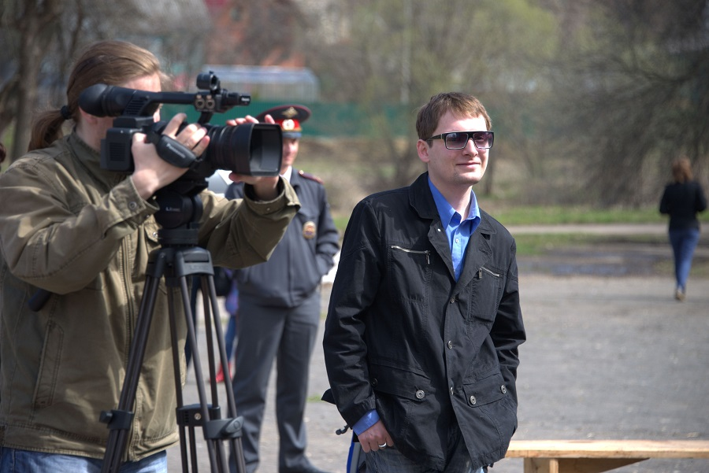

<!DOCTYPE HTML>
<html>
<head>
<link rel="shortcut icon" href="favicon.png" type="image/png" />
</head>
<body>
</body>
</html>
<head>
	<meta http-equiv="content-type" content="text/html; charset=utf-8" />
	<meta name="author" content="Gnatkovsky" />

	<title>Антон Бутовец</title>
    <script type="text/javascript" src="https://ajax.googleapis.com/ajax/libs/jquery/1.10.1/jquery.min.js"></script>
 <style>
/*demo page style*/
    body{background: #f0f0f0;}
    p{line-height:1.5em; padding-bottom:1em;}
    #wrapper{
        width:920px;
        margin:0 auto;
        padding: 0;
    }
    #header {height: 150px;}
/*main menu*/
    #menu{
        text-transform: uppercase;
        text-align: center;
        line-height: 50px;
        background: #333;
    }
    #menu ul{padding:0; margin:0;}
    #menu li{
        display: inline;
        list-style:none;
        margin: 5px 10px;
    }
    #menu li a{
        padding:5px 10px;
        color:#fff;
        text-decoration: none;
        -webkit-border-radius: 5px;
        -moz-border-radius: 5px;
        border-radius: 5px;
    }
    #menu li a:hover{
        background: #36c;
        color: #ff0;
        -webkit-transition-property: color, background;
        -webkit-transition-duration: 0.5s, 0.5s;
    }
    .default{
        width:920px;
    }
    .fixed{
        position:fixed;
        top:-5px; left:0;
        width:100%;
        padding:10px 0;
    }
</style>
<script type="text/javascript">
    $(document).ready(function(){
        
        var $menu = $("#menu");
            
        $(window).scroll(function(){
            if ( $(this).scrollTop() > 100 && $menu.hasClass("default") ){
                $menu.fadeOut('fast',function(){
                    $(this).removeClass("default")
                           .addClass("fixed transbg")
                           .fadeIn('fast');
                });
            } else if($(this).scrollTop() <= 100 && $menu.hasClass("fixed")) {
                $menu.fadeOut('fast',function(){
                    $(this).removeClass("fixed transbg")
                           .addClass("default")
                           .fadeIn('fast');
                });
            }
        });        
    });
</script>
</head>

<body>
<div id="wrapper">
    <div id="header">
        <div id="logo">
            <h2>АНТОН БУТОВЕЦ &nbsp;&nbsp;&nbsp;&nbsp;&nbsp;&nbsp;&nbsp;&nbsp;&nbsp;&nbsp;&nbsp;&nbsp;&nbsp;&nbsp;&nbsp;&nbsp;&nbsp;&nbsp;&nbsp;&nbsp;&nbsp; официальный сайт &nbsp;&nbsp;&nbsp;&nbsp;&nbsp;&nbsp;&nbsp;&nbsp;&nbsp;&nbsp;&nbsp;&nbsp;&nbsp;&nbsp;&nbsp;&nbsp;&nbsp;&nbsp;&nbsp;&nbsp;&nbsp;&nbsp;&nbsp;&nbsp;&nbsp;&nbsp;&nbsp;&nbsp;&nbsp;&nbsp;&nbsp;&nbsp;&nbsp;&nbsp;&nbsp;&nbsp;&nbsp;&nbsp; <a href="https://www.facebook.com/a.butovets"target="_blank"></a> &nbsp; <a href="https://www.instagram.com/a_butovets/"target="_blank"></a></h2>
        </div>
        <div id="menu" class="default">
            <ul>
                <li><a href="index">БИО</a></li>
                <li><a href="novosti">НОВОСТИ</a></li>
                <li><a href="tv">ТВ</a></li>
                <li><a href="radio">РАДИО</a></li>
		<li><a href="books">КНИГИ</a></li>
		<li><a href="contakt">КОНТАКТЫ</a></li>
            </ul>
        </div>
    </div>
    
	<hr>
		<br>
		<br>
		
        <p>
		<font size="+1?5"><br>
<br><b>Антон Бутовец</b> – писатель, журналист, теле- и радиоведущий, композитор и поэт. 
<br>
<br>			
		Творческий путь начал в 2007 году в качестве публициста сразу в нескольких многотиражных печатных изданиях. Затем в течение ряда лет был автором цикла радиопрограмм, посвящённых музыке, театру, поэзии, живописи, архитектуре и истории.  
<br>
<br>			
		В 2011 году, как радиоведущий, <b>А. Бутовец</b> удостоился первого места в номинации «Земляки» межрегионального фестиваля «Я люблю Россию», проводимого Центром национальной славы и Фондом имени Андрея Первозванного. Диплом победителя получал в Государственном Кремлёвском дворце.
<br>
<br>			
		С 2013 года <b>Антон Бутовец</b> работает на телевидении. Занимал должности руководителя службы информации и заместителя главного редактора Щёлковского городского медиа-центра, редактора телеканала «Королёв-ТВ». 
<br>
<br>		
		В 2022 году исполнял обязанности главного редактора общественно-политической, культурной газеты «КлючЪ». 
<br>
<br>
        C 2025 года - автор и ведущий телепередачи о военной истории - "История обного подвига", за которую удостоился звания лауреата междунородного конкурса "Золотое перо Руси" (номинация "Интервью").
<br>
<br>
			
		Среди героев его публикаций, радиопередач и телесюжетов – космонавт <i>Алексей Леонов</i>, лётчица <i>Марина Попович</i>, народный художник СССР <i>Пётр Оссовский</i>, знаменитый скульптор <i>Михаил Шемякин</i>, народный артист России <i>Юрий Розум</i>, известный модельер <i>Вячеслав Зайцев</i>, актёры <i>Валерий Гаркалин</i>, <i>Леонид Каневский</i>, телеведущая <i>Оксана Пушкина</i> и многие другие.  
<br>
<br>			
		С 2009 года <b>А. Бутовец</b> ведёт концертную деятельность, периодически выступая на сценических площадках Москвы в качестве автора и исполнителя собственных музыкальных произведений. 
<br>
<br>			
		С 2015 года его песни звучат в федеральном эфире на главной государственной радиостанции РФ – «Радио России».
<br>
<br>            С 2020 года и по настоящее время проза <b>Антона Бутовца</b> публикуется в книжной серии «Истории, рождённые…» - уникальном проекте Санкт-Петербургского издательства «Северо-Запад», не имеющем аналогов в мировой литературе. 
			Сборники включают в себя рассказы русскоязычных писателей и поэтов, вдохновением для создания которых служат картины известных художников, графиков и иллюстраторов. 
<br><br><i>На сегодняшний день увидели свет следующие произведения А. Бутовца:</i> 
<br>•	<b>«Последнее лето Эсфирь»</b>. Рассказ. Антология «Линии снов. Истории, рождённые Владимиром Золотухиным». СПБ, из-во «Северо-Запад», 2020. <i><br>ISBN 978-5-93835-050-2</I>
<br>•	<b>«Упавший со сцены»</b>. Рассказ. Антология «Феерия полёта. Истории, рождённые Мёбиусом». СПБ, из-во «ТОЙ», 2020. <i><br>ISBN 978-5-93835-059-5</i>  
<br>•	<b>«Зигзаг неудачи»</b>. Рассказ. Антология «Ожившие полотна. Истории, рождённые Фабианом». СПБ, из-во «ТОЙ», 2021. <i><br>ISBN 978-5-93835-106-6</i> 
<br>•	<b>«Пересмешник»</b>. Рассказ. Антология «Серебряный дым. Истории, рождённые Калутой». СПБ, из-во «ТОЙ», 2021. <i><br>ISBN 978-5-93835-262-9</i>  
</font> 
</p>
		<br>
		<br>
		
<hr> 
<br>
<br>
<br>
<br>
<center>© 2022 - Все права защищены</center> 		
	
		
</html></p>
    </div>
</div>
</body>


